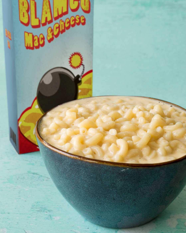

BLAMCO MAC AND CHEESE

YOU WILL NEED:
- 1 pound elbow macaroni, cooked
- 2 medium carrots, chopped
- 1 1/2 cups whole milk
- 1/2 cups heavy cream
- 2 teapoons Worcestershire sauce
- 1/4 cup all-purpose flour
- 2 teapoons ground mustard
- 2 teaspoons garlic powder
- 1/4 teaspoon cayenne pepper
- 5 tablespoons unsalted butter
- 8 ounces sharp cheddar cheese, shredded
- 4 ounces fontina cheese, shredded
- Salt and pepper
- Fill a medium pot with water and bring to a boil. Add the carrots, cover, reduce
the heat to medium, and simmer for 5 minutes, or until the carrots are tender.
Drain and transfer the carrots into a blender. Add the milk, heavy cream, and Worcesershire sauce.
Blend until smooth.
- Combine the flour, ground mustard, garlic powder, and cayenne pepper in a small bowl.
Place a large saucepan over medium-high heat and add the butter.
Once butter is melted, add the spiced flour while constantly whisking. After the butter
and the flour have combined into a roux, slowly whisk in the carrot and milk mixture
until fully combined.
- Whisk in the cheddar and fontina cheese in small batches. Season with salt and pepper.
Add the cooked macaroni to the cheese sauce and stir to coat the macaroni fully.
RETURN TO RECIPE LIST